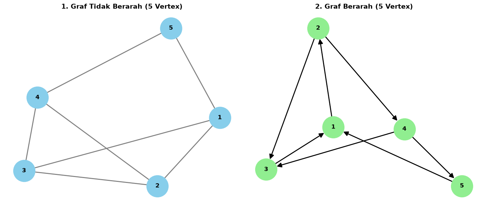
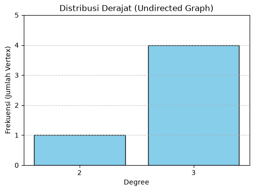
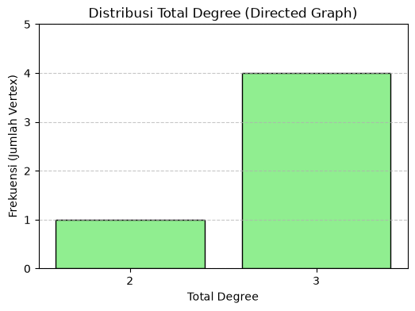

GRAF#
Analisis Graf: 5 Vertex (Berarah & Tidak Berarah)#
Dokumen notebook ini berisi implementasi lengkap pembuatan Graf Tidak Berarah (Undirected Graph) dan Graf Berarah (Directed Graph) dengan 5 vertex (simpul) menggunakan pustaka networkx dan matplotlib.
Seluruh metrik dihitung sesuai instruksi tugas:
Visualisasi Graf (Berarah & Tidak Berarah)
Degree (Derajat) per Vertex (termasuk In-Degree & Out-Degree untuk graf berarah)
Rata-Rata Degree (Average Degree)
Distribusi Derajat (Degree Distribution)
Kepadatan Graf (Graph Density)
Koefisien Klasterisasi (Clustering Coefficient) per Vertex
Rata-Rata Lintasan Terpendek (Average Shortest Path Length)
Matriks Ketetanggaan (Adjacency Matrix)
import networkx as nx
import matplotlib.pyplot as plt
import collections
# Inisialisasi Kanvas Visualisasi Side-by-Side
fig, axes = plt.subplots(nrows=1, ncols=2, figsize=(14, 6))
# 1. Graf Tidak Berarah (Undirected Graph - 5 Vertex)
G_undirected = nx.Graph()
nodes = [1, 2, 3, 4, 5]
edges_undirected = [(1, 2), (1, 3), (2, 3), (2, 4), (3, 4), (4, 5), (5, 1)]
G_undirected.add_nodes_from(nodes)
G_undirected.add_edges_from(edges_undirected)
pos_u = nx.spring_layout(G_undirected, seed=42)
axes[0].set_title("1. Graf Tidak Berarah (5 Vertex)", fontsize=14, fontweight='bold')
nx.draw(G_undirected, pos_u, ax=axes[0],
with_labels=True, node_color='skyblue', node_size=2000,
font_size=12, font_weight='bold', edge_color='gray', width=2)
# 2. Graf Berarah (Directed Graph - 5 Vertex)
# Dibuat Strongly Connected agar Average Shortest Path Length dapat dihitung
G_directed = nx.DiGraph()
edges_directed = [(1, 2), (2, 3), (3, 1), (2, 4), (4, 3), (4, 5), (5, 1)]
G_directed.add_nodes_from(nodes)
G_directed.add_edges_from(edges_directed)
pos_d = nx.spring_layout(G_directed, seed=42)
axes[1].set_title("2. Graf Berarah (5 Vertex)", fontsize=14, fontweight='bold')
nx.draw(G_directed, pos_d, ax=axes[1],
with_labels=True, node_color='lightgreen', node_size=2000,
font_size=12, font_weight='bold', edge_color='black',
arrows=True, arrowsize=20, width=2)
plt.tight_layout()
plt.show()

2. Analisis Metrik Graf Tidak Berarah (Undirected Graph)#
Pada sel berikut dilakukan perhitungan seluruh metrik untuk graf tidak berarah:
Degree per Vertex: Jumlah sisi terhubung pada tiap simpul.
Rata-Rata Degree: Total derajat dibagi jumlah vertex (\(N=5\)).
Distribusi Derajat: Frekuensi kemunculan nilai derajat dalam bentuk tabel dan diagram batang.
Graph Density: Perbandingan sisi aktual dengan sisi maksimum yang mungkin (\(\frac{2E}{N(N-1)}\)).
Koefisien Klasterisasi per Vertex: Mengukur kecenderungan tetangga simpul untuk saling terhubung membentuk segitiga.
Rata-Rata Lintasan Terpendek: Rata-rata jarak terpendek antar seluruh pasangan vertex.
Adjacency Matrix: Matriks biner \(5 \times 5\) koneksi antar vertex.
print("==================================================")
print(" METRIK GRAF TIDAK BERARAH (UNDIRECTED GRAPH) ")
print("==================================================\n")
# A. Degree Masing-Masing Vertex
deg_u = dict(G_undirected.degree())
print("1. Degree Masing-Masing Vertex:")
for node, d in sorted(deg_u.items()):
print(f" - Vertex {node}: {d} sisi")
# B. Rata-Rata Degree
avg_deg_u = sum(deg_u.values()) / G_undirected.number_of_nodes()
print(f"\n2. Rata-Rata Degree: {avg_deg_u:.2f}")
# C. Distribusi Derajat (Text & Plot)
deg_seq_u = [d for n, d in G_undirected.degree()]
deg_count_u = collections.Counter(deg_seq_u)
print("\n3. Distribusi Derajat:")
for d_val, count in sorted(deg_count_u.items()):
print(f" - Degree {d_val}: muncul pada {count} vertex")
plt.figure(figsize=(6, 4))
plt.bar(list(deg_count_u.keys()), list(deg_count_u.values()), color='skyblue', edgecolor='black')
plt.title("Distribusi Derajat (Undirected Graph)")
plt.xlabel("Degree")
plt.ylabel("Frekuensi (Jumlah Vertex)")
plt.xticks(list(deg_count_u.keys()))
plt.yticks(range(0, max(deg_count_u.values()) + 2))
plt.grid(axis='y', linestyle='--', alpha=0.7)
plt.show()
# D. Density Graph
density_u = nx.density(G_undirected)
print(f"4. Density Graph: {density_u:.4f}")
# E. Koefisien Klasterisasi Masing-Masing Vertex
cluster_u = nx.clustering(G_undirected)
print("\n5. Koefisien Klasterisasi Masing-Masing Vertex:")
for node, c in sorted(cluster_u.items()):
print(f" - Vertex {node}: {c:.4f}")
# F. Rata-Rata Lintasan Terpendek (Average Shortest Path Length)
avg_sp_u = nx.average_shortest_path_length(G_undirected)
print(f"\n6. Rata-Rata Lintasan Terpendek (Avg Shortest Path Length): {avg_sp_u:.4f}")
# G. Matriks Ketetanggaan (Adjacency Matrix)
adj_u = nx.adjacency_matrix(G_undirected).todense()
print("\n7. Matriks Ketetanggaan (Adjacency Matrix 5x5):")
print(adj_u)
==================================================
METRIK GRAF TIDAK BERARAH (UNDIRECTED GRAPH)
==================================================
1. Degree Masing-Masing Vertex:
- Vertex 1: 3 sisi
- Vertex 2: 3 sisi
- Vertex 3: 3 sisi
- Vertex 4: 3 sisi
- Vertex 5: 2 sisi
2. Rata-Rata Degree: 2.80
3. Distribusi Derajat:
- Degree 2: muncul pada 1 vertex
- Degree 3: muncul pada 4 vertex

4. Density Graph: 0.7000
5. Koefisien Klasterisasi Masing-Masing Vertex:
- Vertex 1: 0.3333
- Vertex 2: 0.6667
- Vertex 3: 0.6667
- Vertex 4: 0.3333
- Vertex 5: 0.0000
6. Rata-Rata Lintasan Terpendek (Avg Shortest Path Length): 1.3000
7. Matriks Ketetanggaan (Adjacency Matrix 5x5):
[[0 1 1 0 1]
[1 0 1 1 0]
[1 1 0 1 0]
[0 1 1 0 1]
[1 0 0 1 0]]
3. Analisis Metrik Graf Berarah (Directed Graph / Digraph)#
Pada sel berikut dilakukan perhitungan seluruh metrik untuk graf berarah:
Degree per Vertex: Membedakan In-Degree (sisi masuk), Out-Degree (sisi keluar), dan Total Degree.
Rata-Rata Degree: Rata-rata In-Degree, Out-Degree, dan Total Degree.
Distribusi Derajat: Frekuensi total derajat pada graf berarah.
Graph Density: Perbandingan sisi berarah aktual dengan kapasitas maksimum (\(N(N-1)\)).
Koefisien Klasterisasi per Vertex: Mengukur kecenderungan hubungan bertetangga pada graf berarah (directed clustering).
Rata-Rata Lintasan Terpendek: Rata-rata lintasan terpendek dengan memperhatikan arah panah.
Adjacency Matrix: Matriks \(5 \times 5\) di mana entri \((i, j) = 1\) menunjukkan adanya panah dari vertex \(i\) ke vertex \(j\).
print("==================================================")
print(" METRIK GRAF BERARAH (DIRECTED GRAPH) ")
print("==================================================\n")
# A. Degree Masing-Masing Vertex (In, Out, Total)
in_deg_d = dict(G_directed.in_degree())
out_deg_d = dict(G_directed.out_degree())
tot_deg_d = dict(G_directed.degree())
print("1. Degree Masing-Masing Vertex:")
for node in sorted(G_directed.nodes()):
print(f" - Vertex {node}: Total Degree = {tot_deg_d[node]} | In-Degree = {in_deg_d[node]} | Out-Degree = {out_deg_d[node]}")
# B. Rata-Rata Degree
avg_tot_deg_d = sum(tot_deg_d.values()) / G_directed.number_of_nodes()
avg_in_deg_d = sum(in_deg_d.values()) / G_directed.number_of_nodes()
avg_out_deg_d = sum(out_deg_d.values()) / G_directed.number_of_nodes()
print(f"\n2. Rata-Rata Degree:")
print(f" - Rata-Rata Total Degree : {avg_tot_deg_d:.2f}")
print(f" - Rata-Rata In-Degree : {avg_in_deg_d:.2f}")
print(f" - Rata-Rata Out-Degree : {avg_out_deg_d:.2f}")
# C. Distribusi Derajat (Total Degree)
deg_seq_d = [d for n, d in G_directed.degree()]
deg_count_d = collections.Counter(deg_seq_d)
print("\n3. Distribusi Total Degree:")
for d_val, count in sorted(deg_count_d.items()):
print(f" - Degree {d_val}: muncul pada {count} vertex")
plt.figure(figsize=(6, 4))
plt.bar(list(deg_count_d.keys()), list(deg_count_d.values()), color='lightgreen', edgecolor='black')
plt.title("Distribusi Total Degree (Directed Graph)")
plt.xlabel("Total Degree")
plt.ylabel("Frekuensi (Jumlah Vertex)")
plt.xticks(list(deg_count_d.keys()))
plt.yticks(range(0, max(deg_count_d.values()) + 2))
plt.grid(axis='y', linestyle='--', alpha=0.7)
plt.show()
# D. Density Graph
density_d = nx.density(G_directed)
print(f"4. Density Graph: {density_d:.4f}")
# E. Koefisien Klasterisasi Masing-Masing Vertex
cluster_d = nx.clustering(G_directed)
print("\n5. Koefisien Klasterisasi Masing-Masing Vertex:")
for node, c in sorted(cluster_d.items()):
print(f" - Vertex {node}: {c:.4f}")
# F. Rata-Rata Lintasan Terpendek (Average Shortest Path Length)
avg_sp_d = nx.average_shortest_path_length(G_directed)
print(f"\n6. Rata-Rata Lintasan Terpendek (Avg Shortest Path Length): {avg_sp_d:.4f}")
# G. Matriks Ketetanggaan (Adjacency Matrix)
adj_d = nx.adjacency_matrix(G_directed).todense()
print("\n7. Matriks Ketetanggaan (Adjacency Matrix 5x5):")
print(adj_d)
==================================================
METRIK GRAF BERARAH (DIRECTED GRAPH)
==================================================
1. Degree Masing-Masing Vertex:
- Vertex 1: Total Degree = 3 | In-Degree = 2 | Out-Degree = 1
- Vertex 2: Total Degree = 3 | In-Degree = 1 | Out-Degree = 2
- Vertex 3: Total Degree = 3 | In-Degree = 2 | Out-Degree = 1
- Vertex 4: Total Degree = 3 | In-Degree = 1 | Out-Degree = 2
- Vertex 5: Total Degree = 2 | In-Degree = 1 | Out-Degree = 1
2. Rata-Rata Degree:
- Rata-Rata Total Degree : 2.80
- Rata-Rata In-Degree : 1.40
- Rata-Rata Out-Degree : 1.40
3. Distribusi Total Degree:
- Degree 2: muncul pada 1 vertex
- Degree 3: muncul pada 4 vertex

4. Density Graph: 0.3500
5. Koefisien Klasterisasi Masing-Masing Vertex:
- Vertex 1: 0.1667
- Vertex 2: 0.3333
- Vertex 3: 0.3333
- Vertex 4: 0.1667
- Vertex 5: 0.0000
6. Rata-Rata Lintasan Terpendek (Avg Shortest Path Length): 2.0000
7. Matriks Ketetanggaan (Adjacency Matrix 5x5):
[[0 1 0 0 0]
[0 0 1 1 0]
[1 0 0 0 0]
[0 0 1 0 1]
[1 0 0 0 0]]
4. Kesimpulan dan Interpretasi Metrik#
Berdasarkan hasil komputasi metrik pada graf 5 vertex di atas (baik yang tidak berarah maupun berarah), berikut adalah interpretasi dari angka-angka yang dihasilkan:
A. Karakteristik Graf Tidak Berarah (Undirected Graph)#
Degree & Distribusi: Kita dapat melihat vertex mana yang bertindak sebagai hub (pusat koneksi). Vertex dengan degree tertinggi adalah titik yang paling krusial dalam graf ini.
Kepadatan (Density): Nilai density menunjukkan seberapa terhubung jaringan ini dibandingkan dengan potensi maksimalnya. Semakin mendekati 1, semakin padat graf tersebut (dense), dan jika mendekati 0 disebut graf renggang (sparse).
Koefisien Klasterisasi: Menunjukkan seberapa kuat komunitas yang terbentuk. Jika nilainya 0 pada suatu vertex, berarti tidak ada satupun tetangganya yang saling terhubung satu sama lain.
Rata-Rata Lintasan Terpendek: Menunjukkan rata-rata “langkah” atau hops yang dibutuhkan untuk berpindah dari satu vertex ke vertex lain. Angka yang kecil menandakan komunikasi/aliran informasi dalam jaringan ini sangat cepat (efek small-world).
B. Karakteristik Graf Berarah (Directed Graph)#
In-Degree dan Out-Degree:
Vertex dengan In-Degree tinggi mengindikasikan popularitas atau tujuan aliran informasi (sebagai sink atau penerima).
Vertex dengan Out-Degree tinggi menunjukkan sumber pengaruh atau penyebar informasi utama (sebagai source).
Adjacency Matrix (Matriks Ketetanggaan): Berbeda dengan graf tidak berarah yang matriksnya simetris (cermin di garis diagonal), matriks pada graf berarah cenderung tidak simetris karena koneksi \(A \rightarrow B\) tidak menjamin adanya koneksi \(B \rightarrow A\).
Rata-Rata Lintasan Terpendek: Terkadang jalurnya bisa lebih panjang dari graf tidak berarah, karena pergerakan dibatasi secara ketat oleh arah panah.